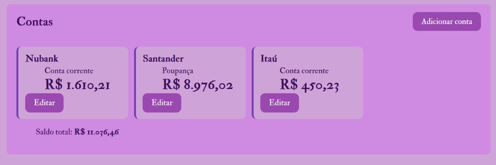
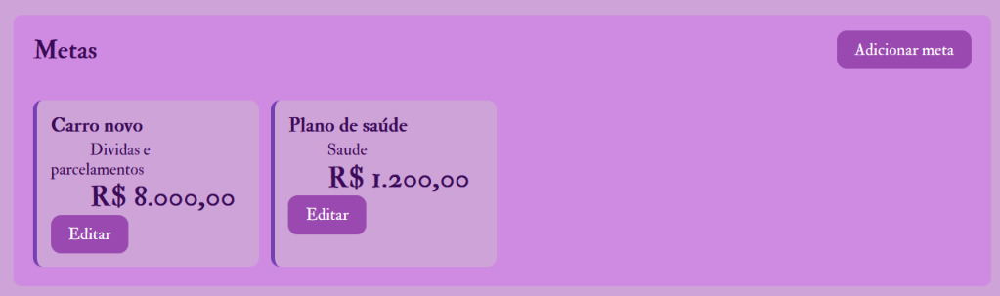
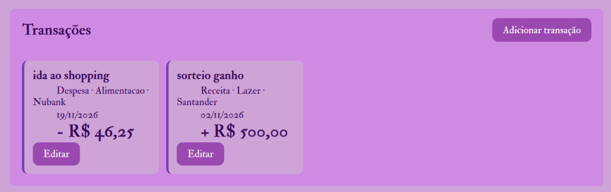

Gestão e organização das suas contas e despesas em um único lugar. Adicione seu saldo em suas contas bancárias, faça planejamentos e defina metas!
O site foi pensado com o objetivo de auxiliar a organização financeira pessoal, unindo em um só lugar o saldo e as transações feitas em todas contas bancárias e também considerando o dinheiro em espécie. Além disso, o BolsoLeve possibilita que o usuário defina e salve metas financeiras com base em categorias pré-definidas. A organização é simples e fácil, pois cada funcionalidade tem diversas opções como o tipo de conta bancária, a descrição das transações realizadas, o banco que transferiu e/ou recebeu dinheiro, entre outras.
Em cada campo, selecione os itens desejados conforme o descrito a seguir:
Selecione o banco ou se é dinheiro em espécie, além disso, escolha se é conta corrente ou poupança. Veja seu saldo em cada conta e/ou seu saldo total.

Crie metas para economizar dinheiro por categorias. Acompanhe o quanto você economizou.

Escolha uma conta, defina se a transação feita foi uma receita ou despesa, escolha a categoria da transação, a data em que foi realizada e qual foi seu valor.
